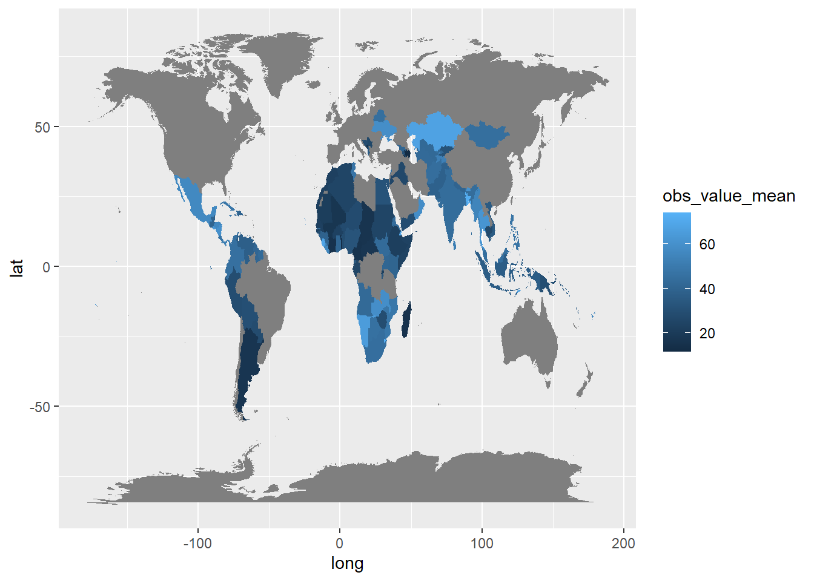
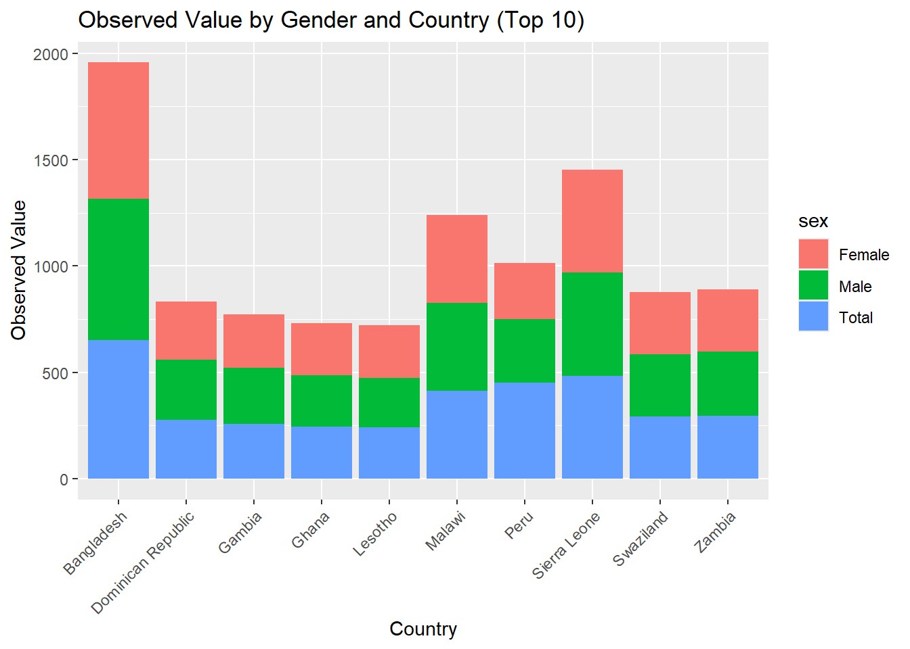
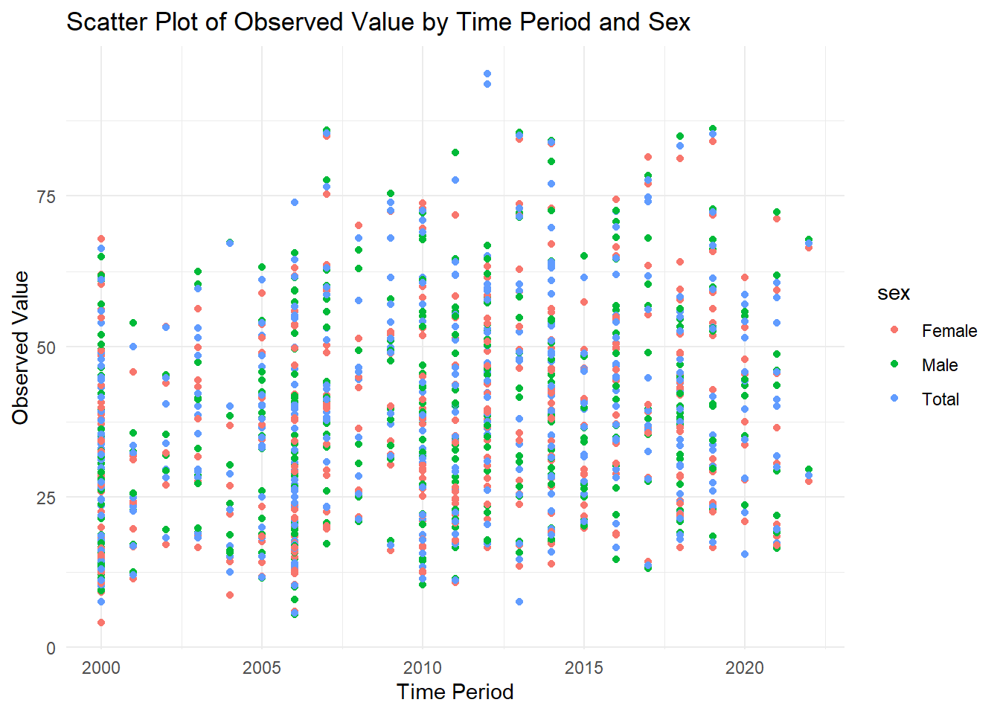
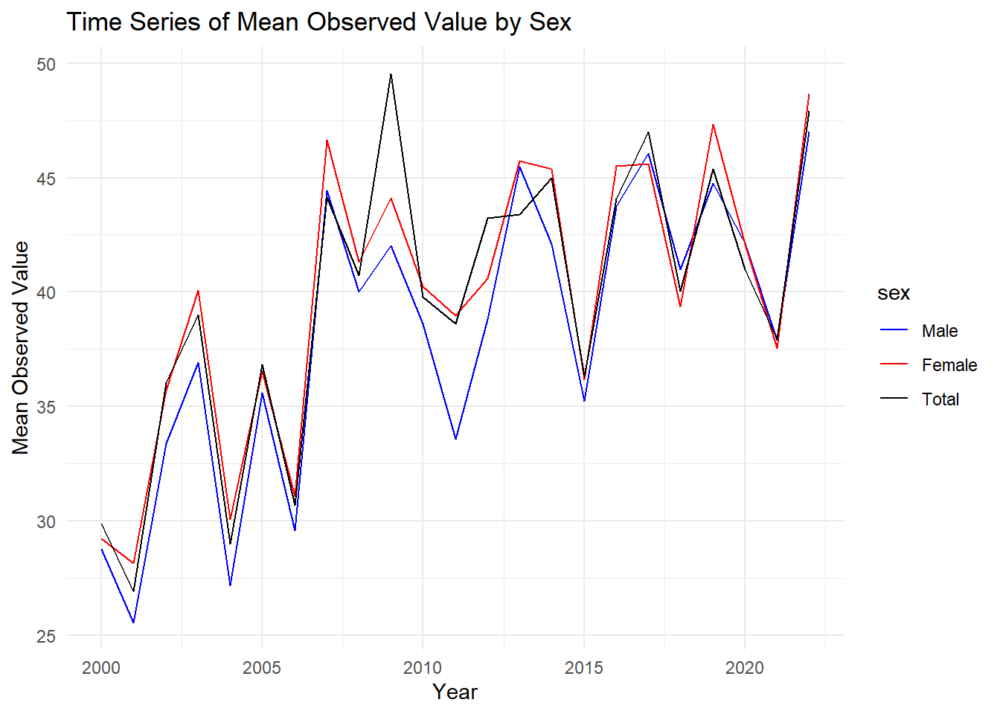

Quarto Assignment: Unicef data analysis - A Global Analysis of Diarrhoea Treatment Practices among Children Under 5
Author
Richard Nwamadi
In this modern data-driven world, organizations like UNICEF are in the lead of leveraging information to cater to critical global health challenges. This report and analysis focus on the accessibility and utilization of Oral Rehydration Solution (ORS) for treating diarrhoea among children under 5, an important intervention in lowering child mortality rates globally. Diarrhoeal diseases continue to pose a significant threat to child health, particularly in low- as well as middle-income countries, where access to healthcare services is mostly limited. By analyzing available data from UNICEF and using data visualization techniques, this study aims to provide insights into the current landscape of ORS utilization, identify areas for improvement, and inform evidence-based interventions to improve child health outcomes.
Despite significant progress in lowering child mortality rates in recent years, diarrhoeal diseases remain a leading cause of death among children, claiming the lives of nearly 1.5 million children annually. Access to ORS, a simple and cost-effective solution, can remarkably reduce the severity and duration of diarrhoea episodes, hence preventing dehydration and associated complications. However, inconsistencies in access to healthcare services persist, particularly in vulnerable populations, worsening health inequities. By utilising the power of data analytics and visualization, UNICEF aims to advocate for equitable access to ORS treatment and ultimately improve child health outcomes.
Plots and Analysis
Average Percentage of Children Under 5 Receiving ORS for Diarrhoea Treatment Across Different Countries
In this study, the dataset containing information on the percentage of children receiving ORS for diarrhoea treatment (unicef_indicator_2.csv) was initially accessed alongside world map data (map_data(“world”)). Subsequently, data aggregation is performed to compute the average percentage of children receiving ORS within each country. Following this, the combined dataset was merged with the world map data based on the country/region. Finally, using ggplot2, a choropleth map was generated wherein each country was represented by a polygon filled with a colour indicative of the average percentage of children receiving ORS.
suppressPackageStartupMessages({library(tidyverse)library(plotly)})unicef_indicator_2 <-read_csv("unicef_indicator_2.csv", show_col_types =FALSE)map_world <-map_data("world")agg_data_for_obs_value <- unicef_indicator_2 %>%group_by(country) %>%summarize(obs_value_mean =mean(obs_value, na.rm =TRUE))map_data_join <-full_join(agg_data_for_obs_value,map_world, by =c("country"="region"))ggplot(map_data_join) +aes(x = long, y = lat, group = group, fill = obs_value_mean) +geom_polygon()

This visual representation offers insight into the effectiveness of ORS treatment for diarrhoea among children under 5 years old across different geographical regions. Darker shades on the map signify higher proportions of children receiving ORS, indicative of improved accessibility and utilization of this treatment method. some of the regions include Niger, Chad, Mali, ect.
Top 10 Countries with Observed Percentage of Children Under 5 Receiving ORS for Diarrhoea Treatment:
This plot depicts the observed percentage of children receiving Oral Rehydration Solution (ORS) for diarrhoea treatment across the top 10 countries with the highest observed values. Each bar in the chart represents the observed value for a specific country/region, with distinct colours denoting the breakdown by gender. Initially, the dataset is aggregated to calculate the total observed value (sum of percentages of children receiving ORS) for each country. Later, the top 10 countries with the highest total observed values are identified, and the data is filtered to include only observations from these countries. Using ggplot2, a bar chart is then generated to visually portray the observed value for each country, while also highlighting differences in ORS usage between genders.
country_totals <- unicef_indicator_2 %>%group_by(country) %>%summarize(total_obs_value =sum(obs_value, na.rm =TRUE)) %>%arrange(desc(total_obs_value)) # Arrange in descending order by total observed value# Selecting top 10 countriestop_10_countries <-head(country_totals, 10)$country# Filtering data for top 10 countriestop_10_data <- unicef_indicator_2 %>%filter(country %in% top_10_countries)# Plot bar chart for top 10 countries by observed value and sexggplot(data = top_10_data) +geom_bar(mapping =aes(x = country, y = obs_value, fill = sex), stat ="identity") +labs(x ="Country", y ="Observed Value", title ="Observed Value by Gender and Country (Top 10)") +theme(axis.text.x =element_text(angle =45, hjust =1))

The visualisation suggests that Bangladesh has the highest percentage. followed by Sierra Leone, Malawi and So on. It could also be observed that Bangladesh has a significantly high value compared to other countries indicating sufficient utilisation of ORS to treat Diarrhoea for male and female children.
Scatter Plot by Time Period and Gender: Observed Percentage of Children Under 5 Receiving ORS for Diarrhoea Treatment
This scatter plot represents the observed percentage of children under 5 years old receiving ORS for diarrhoea treatment across various Scatter plots by Time Period and Gender, with data points differentiated by gender. Each data point on the plot represents an observation, with the x-axis representing the time period and the y-axis indicating the observed value (percentage of children receiving ORS). The colour of each point reflects the gender of the children. Through this plot, trends and patterns in ORS utilization for diarrhoea treatment among children under 5 over time are analysed, along with potential disparities between genders.
ggplot(data = unicef_indicator_2, aes(x = time_period, y = obs_value, color = sex)) +geom_point() +labs(x ="Time Period", y ="Observed Value", title ="Scatter Plot of Observed Value by Time Period and Sex") +theme_minimal()

It can be observed from the above plot that the observed value(indicating % of children receiving ORS) reached its highest in the year around 2012 and it includes the total number of children(male and female). Also, it can be observed that distribution is sighly even among male and female, indicating there is no restriction on male and female treatement.
Time Series Analysis: Average Observed Percentage of Children Under 5 Receiving ORS for Diarrhoea Treatment by Gender
This time series analysis shows the mean observed percentage of children under 5 years old receiving ORS for diarrhoea treatment over successive years, categorized by gender. The dataset is aggregated to calculate the average observed value for each year and gender category, and any missing gender values are replaced with “Total” for thorough analysis. The resulting time series plot displays trends over time, with the x-axis representing the year and the y-axis indicating the mean observed value. Each line on the plot corresponds to a different gender category, with colours distinguishing between males, females, and total values. The plot aims to show temporal patterns and gender-specific variations in ORS utilization for diarrhoea treatment among children under 5, providing better insights for healthcare professionals regarding decission making.
# Group data by time_period and sex, calculating mean obs_valuetime_series_data <- unicef_indicator_2 %>%group_by(time_period, sex) %>%summarize(mean_obs_value =mean(obs_value, na.rm =TRUE)) %>%ungroup() %>%mutate(sex =ifelse(is.na(sex), "Total", sex))
`summarise()` has grouped output by 'time_period'. You can override using the
`.groups` argument.
# Ploting time seriesggplot(data = time_series_data, aes(x = time_period, y = mean_obs_value, color = sex, group = sex)) +geom_line() +labs(x ="Year", y ="Mean Observed Value", title ="Time Series of Mean Observed Value by Sex") +scale_color_manual(values =c("blue", "red", "black"), labels =c("Male", "Female", "Total")) +theme_minimal()

From the time series plot, it can be observed that the overall percentage of children treated with ORS is increasing over the period. It also can be seen that the number of males and females treated are almost the same, However, there is an exception around the year 2012. where a number of males treated with ORS is significantly lower than that of females. However, The trend changed over time and it remained consistent for both males and females.